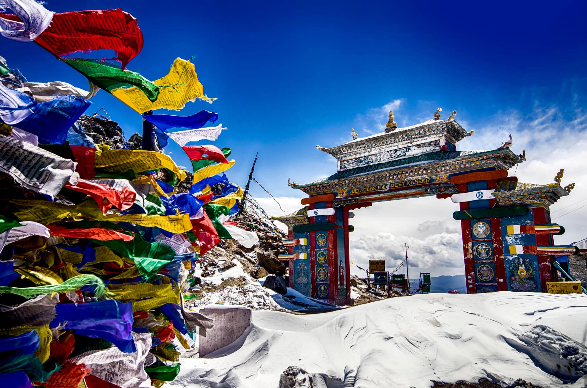

Tawang is a high altitude town located in the lap of the mighty Himalayas which offers a perfect blend of nature and culture. Since the town boasts an elevation of 10,000 feet, it is a paradise for any mountain lover looking for high altitude places to visit Arunachal Pradesh.
The picturesque town is replete with numerous tourist attractions like vibrant Buddhist monasteries, high altitude passes, war memorial and scenic lakes which make it an enticing holiday destination.
Among the most important tourist attractions, Tawang proudly cradles are the largest monastery in India and Tawang War Memorial built to commemorate the martyrdom of soldiers who laid down their lives in Sino-Indian war.

Ziro Valley is a picturesque valley tucked away in the Himalayan foothills. Surrounded by the pine ridden mountains, paddy rice fields, quaint hamlets, bamboo huts and vibrant range of flora and fauna, Ziro Valley is a paradise for nature lovers, adventure seekers as well as cultural vultures. Being a World Heritage Site, this valley gives you a chance to explore the culture and tradition of the tribe Apatani which is an exclusive experience that you will cherish for the rest of your life.
Places like Talley Valley Wildlife Sanctuary, Kile Pakho, Meghna Cave Temple, Pine Grove, Tarin Fish Farm, Midey, etc. will make your visit here memorable. A visit to this tranquil place will definitely soothe your soul and mind.

Another treat for wildlife enthusiasts in Arunachal Pradesh, Namdapha National Park is the largest protected area and the third largest national park in India. The park is spread across an area of 1985 sq. km and features an elevation range of 200 metres to 4571 metres.
The towering mountains, dense jungles, and many water bodies in the national park harbour an extensive range of wildlife species including snow leopard, red panda, and clouded leopard, and the park is thus considered to be one of the most excellent areas in terms of biodiversity. The activities that can be enjoyed at Namdapha are wildlife and landscape photography, boat ride, jungle camping, jungle safari, and much more.

Sela Pass is a mountain pass which enjoys an elevation of 13,700 feet. Snow covers this pass all year round and it remains open for the tourists during all seasons. This pass is considered sacred by Buddhists, and it is believed that there are 101 lakes around it.
The fame of the pass is also attributed to the divine high altitude Sela Lake or often known as the Paradise Lake that adds grace to the picturesqueness of the place. Sela Lake freezes during the winter which makes this lake dreamlike.
One of the most significant places to visit in Arunachal Pradesh, Tezu is a hotspot for tourism in the state. Located amidst the scenic Mishmi Hills, this town has a lot on offer for tourists that includes wildlife sanctuary, museum, botanical garden, and quaint villages.
the most popular attraction here remains the photogenic Glow Lake sitting against the backdrop of snow-capped mountains, giving you a reason to stare at it in disbelief.
Bhalukpong is situated on the banks of Kameng River in the foothills of Himalayas. The place exhibits an unmatched level of scenic beauty.
There are many thrilling activities that you can indulge in here like rafting, canoeing, trekking, hiking, fishing and wildlife exploration. Pakhui Wildlife Sanctuary, Tipi Orchidarium, Bhalukpong Fort are a few of the main attractions in this scenic town. This place undeniably is among the best tourist places in Arunachal Pradesh.
Bomdila is a great place for adventure sports, rafting, angling and trekking. The best time for trekking is October to February.
Pasighat is one of the oldest cities of Arunachal Pradesh. This is a great place for tourists who wish to experience the beauty of nature. The city is the entrance point for the Arunachal Pradesh.
Nuranang Falls, a large waterfall near Tawang.
Tawang War Memorialis not to be missed. It is maintained by the Indian Army and has inscribed therein the names of those who died defending Tawang during the Chinese intrusion in 1962.
Greener Pastures
Kameng River rafting
rafting
Biking
Nuranang Falls
Bap Teng Kang Waterfall.
Waterfall.